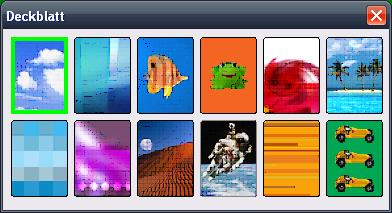

Deckblatt wechseln
Um das Deckblatt (die Rückseite der Karten) zu ändern, wählen Sie im Hauptmenü Programm -> Deckblatt... oder drücken Sie F5 auf Ihrer Tastatur.

In dem sich nun öffnenden Fenster klicken Sie auf das gewünschte Motiv.
Wenn Sie das Fenster nun schließen, wird Ihre Wahl umgesetzt.